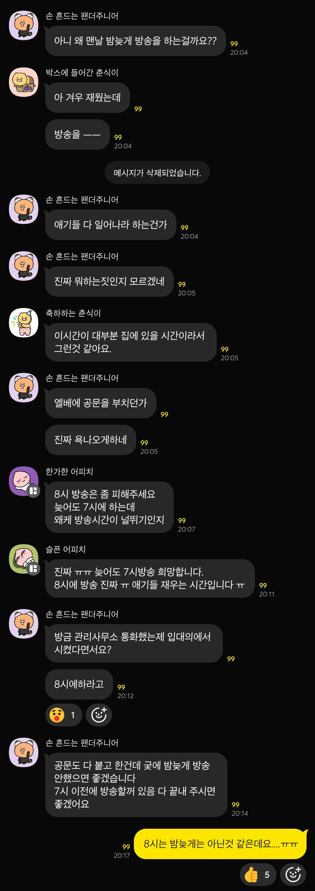

8시가 뭐가 늦은시간임
6시 정시퇴근해도 와서 씻고 밥 막 다먹은 시간이 8시인데 단체생활에 혼자사나
방송이 존나 구시대적이고 짜증 유발하는 거 맞는데
유난을 뒤지게 떨어서 아파트 편 들어주고 싶게 만드네 ㅋㅋ
ㅈ까는 소리하지말고 아기 수면교육부터...
우리집은 "벨누르지말고 문앞에 놓아주세요" 이딴 요청도 안함
ㅅㅂ 며칠만 고생하면 귀닫고 잠드는데
그 며칠 저녁에 우는 소리 듣기 싫다고, 애 정서에 안좋다고 울자마자 호들갑 떠는것보면 얼탱이없음
22시에 긴급방송 나와서 애 깨면 다시 재우면 되고
뭐가 문제임???
우리 아파트 단톡방도 저런 소리 몇몇이 하는데 애가 적응하게 만들어야지 공동주택에 사는데 익숙해져야되고
23, 10갤짜리들도 사이렌만 아니면 방송나와도 잘 잔다
이게 맞음
방송이 작은 소리는 아니지만 저녁 8시 방송으로 겨우 잠든 아기가 깬다?
수면교육이 문제던가 아니면 임신상태에서 너네의 수면패턴에 문제일텐데?
그럼 이악물고 참아야지 뭔 공동주택에서 남탓을 하고 있어
아파트가 뭔 전원주택인줄 아나 공동주택이야 공.동.주.택
어디 구석탱이에 쳐박힌 일반주택의 불편함을 살아봐야 아 내가 여렷이 모여사는 공동주택에서 사니까 편리함이 이렇게 많구나 하지
오 그렇게 어린애들도 수면교육이 되는구나.. 결혼생각도 없고 근처에 아직 애 있는 사람도 없어서 그냥 막연히 하루종일 울고 우는 애 땜에 잠도 못자는 줄 ㅋㅋ
수면교육이 뭐 거창한것도 아님
안아서 재우지 않고 눞혀서 재우기
잠자는 공간은 어둡고, 동일한 공간에서 이 공간을 들어가면 자는곳이라는 습관 길러주고
비슷한 시간에 잠들게하기 수유텀 지켜주기 등등..
그냥 규칙적인 생활을 시켜주면 됨 ㅋㅋㅋ
그러면 보통 50일쯤 되면 분유의 경우 3~4시간마다 먹이게되는데 뱃골만 잘 늘면 4시간 텀까지 가능해서
이때부터 숨통이 틔임
싸이렌 울려도 잘 자면 애 청력에 문제 있는거 아님?
개인적으론 마지노선은 22시라고 생각함
애기 키우긴 한데 방송 자체는 별 생각은 없긴한데 진짜 중요한거만 아니면 방송좀 안했음 좋겠다. 내용이 그닥 중요한 내용도 아님. 뭐 주차장 청소하니 차빼달라 이런거면 공감하겠으나 별 ㅈ도 안중요한 어플깔아라 뭐 이런거 방송 넘 많이해서
8시면 직장인들 퇴근해서 대부분 집에 있을 시간이니까 8시에 하는거지.
7시면 6시 퇴근인데 한시간만에 집까지 딱 도착하는 직장 가진 사람들이 얼마나 있다고
6시에칼퇴해도 차 졸라막히는거 운전해 집가면 7시가 넘어 시밸럼들아
방송소리 막는 테이프 잇던디
아파트에 방송 나오는거 자체가 통제받고있다는 느낌 들어서 별로던데…걍 엘베에나 공고 붙혀 놓으면 알아서 보는데…
난 애 어릴때 천장 스피커 쏙 빼서 스위치 달아놨었음. 본인이 불편하면 좀 스스로 방안을 찾아봐라
근데 아파트 살면 저런거 입대위에 안건 올리고 어느정도 범위까지 방송할지 정해야지 공동주택인데
애가 깨는건 그 집의 문제고...
요즘 젊은 애엄마들이 툭하면 애기 핑계되면서 불평,불만이 존나 많음. 그거는 자기 가족이나 남편도 듣기 힘든데 타인에게 당연한듯이 똑같이 행동하면 뭐라 말은 안하지만 짜증난다. 사회에서 너무 오냐오냐 해줘서 그런가.
젊은 여자도 그렇고, 개드립도 보면 그냥 기분이 나빠진 걸 실질적인 피해를 입었다고 생각하는 사람이 되게 많아져서 반발이 되게 심하더라고.
맴충~
9~18이 적절해보임
요즘엔 문자나 알림톡으로 바꾸는 추세래